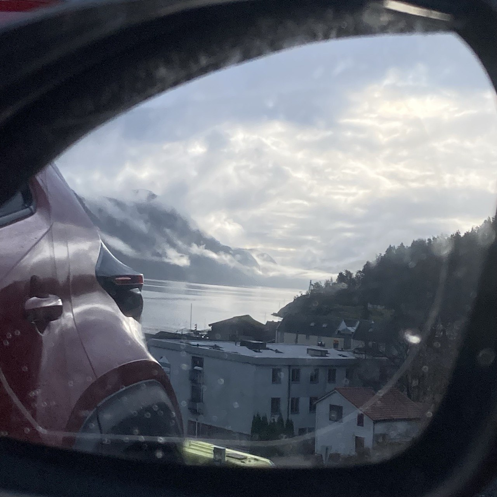

-
UA

- ENG
14 лист. 2024 р.

Rogaland, Norge - Oct, 2024
В процесі проходження інтропрограмми ви отримуєте місце практики, яке пов’язане з вашим попереднім місцем роботи в Україні. Мета практики, що б це стало вашою потенційною роботою в Норвегії. Під час проходження практики ви тренуєте мову, вивчаєте термінологію, культуру роботи. По закінченню інтропрограми влаштовуєтесь по місцю практики.
У випадках, коли роботодавець є чесною людиною, в комуні є робочі місця під ваш фах та немає проблем з фінансуванням, це так і відбувається. Але в більшості випадків реальність виглядає по іншому.
Відходивши вподовж року на практику ви підходите до роботодавця з питанням, «чи візьмете ви мене на роботу?». Роботодавець вам відповідає, «рівень твого норвежського недостатній для цього», «необхідно мати хоча б Б2, бо А2 недостатньо».
У кооперації з інтроцентром та НАВом вас знову влаштовують на вже тільки не språkpraksis, а arbeidstrening. Ви виконуєте ті самі завдання, що і норвежські, польські та литовські робочі, але отримуєте мінімалку, без шансу отримати контракт.
Це саме відноситься і до державного сектору: асистент в школі, дитячому садочку. Навіщо укладати контракт, якщо через НАВ ви будете отримувати менше?
Роботодавцю вигідно мати робочого за якого платить НАВ, тому шансів отримати контракт у вас немає.
Як ви розумієте, якщо після закінчення війни в Україні, питання повернення додому буде вирішуватись в індивідуальному порядку, то обставини будуть не на вашому боці.
Одна з умов отримання посвідки на проживання, це фінансова незалежність.
Перше, це вивчити мову норвежську мову мінімум на Б1 рівень, або мати достатні для роботи знання англійської.
Чим вище рівень норвежської, тим більше ваші шанси. Комунікація це ключ до успіху.
Відвідуйте språkkafe та leksehjelp, знайомтесь з сусідами-норвежцями. Шанси отримати роботу через знайомства набагато вище.
Друге і основне - це шукати роботу в іншій комуні. Це пов’язано з тим, що в іншій комуні ви не залежите від місцевого НАВу.
Якщо ви втрачаєте роботу, ви маєте право повернутись у свою комуну та вони зобов’язані надати вам житло та соціальну допомогу.
Дата останньої редакції статті: 14 листопада 2024 р.